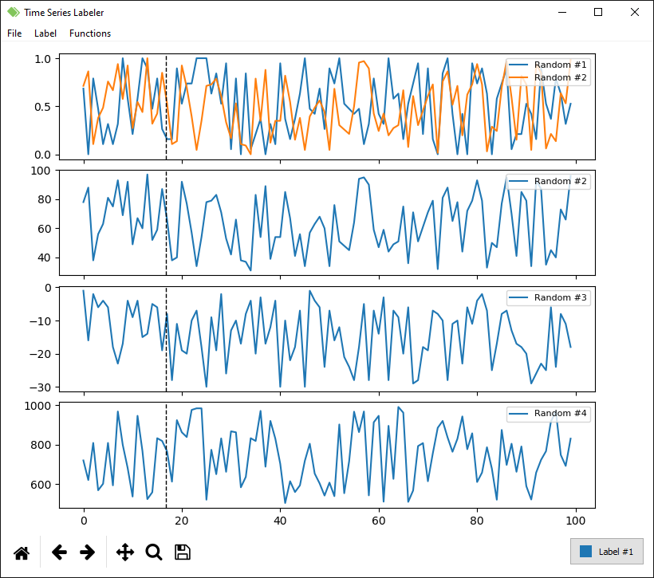

Introduction
Time Series Labeler (or just TSL) is a Python-developed tool for time series analysis, labelling and processing on Windows, Linux and MacOS.
It allows to plot multiple series at the same time, and provides features to manage the graphs layout. As the name suggests, labels can be put on some specific time lapses to identify a particular event (i.e. a machinery failure) and then be saved on the original data file.
Label names and colors are customizable from within the application and are stored in a specific configuration file for the type of selected project: in fact, you can choose to work on single files or manage bigger project for files containing the same kind of data (that is, the time series are indicated with the same name and are arranged in the same way for all files included in the project).
Furthermore, the application combines key bindings, mouse click and drag/drop to speed up operations and allow a quick context change from a file to the following. Zoom in and out is supported and can become really useful when managing really long series: high performances are granted by a downsampling algorithm which doesn't affect the usage and is completely transparent to the user.
Advanced signal processing feature is also provided: an expansible set of functions can be used to process the time series and plot the generated ones alongside the original (e.g. derivative, integral). The user could also choose the name of the new series to be generated and the parameters to be adopted bu the function algorithm.
Table of contents
- Project home
- Getting started
- View on GitHub